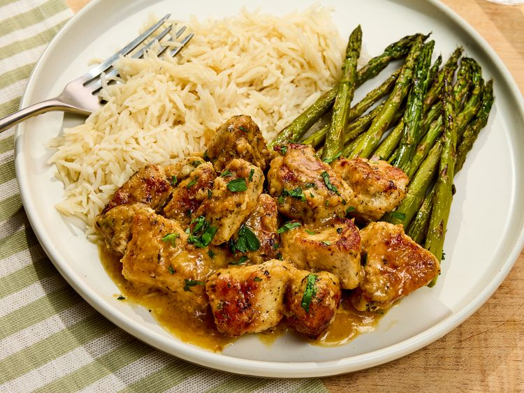

Home
Garlic Butter Chicken Bites

Description
This fast and flavorful recipe will take your weeknight chicken dinner to
the next level. These tender, pan-seared chicken bites, coated in a rich
garlic butter sauce with a touch of lemon, are perfect for tossing with
pasta or serving alongside your favorite side dish. In just 25 minutes,
you'll have a delicious meal that's sure to impress, even on the busiest
nights.
Ingredients
- 2 tablespoons all-purpose flour
- 1 teaspoon kosher salt
- 1 teaspoon italian seasoning
- ¼ teaspoon granulated garlic
-
1 pound boneless skinless chicken breast (cut into 1 to 1 ½ inch pieces)
- 2 tablespoons olive oil
- 1 tablespoon grated garlic (from about 6 garlic cloves)
- ¼ cup dry white wine
- 4 tablespoons unsalted butter (cubed)
- ½ tablespoon fresh lemon juice
- Chopped parsley
Directions
- Gather all ingredients.
-
Whisk together flour, salt, Italian seasoning, and granulated garlic in
a medium bowl until evenly combined; add chicken and toss until evenly
coated.
-
Heat oil in a large non-stick skillet over medium-high until just
shimmering. Add coated chicken pieces in an even layer; cook,
undisturbed, until browned on one side, about 4 minutes. Flip chicken
and cook until browned and cooked through, about 4 minutes more.
Transfer chicken to a clean plate; wipe skillet clean.
-
Reduce heat to medium. Add garlic; cook, stirring constantly, until
fragrant and slightly browned, 1 to 2 minutes. Pour in wine and cook,
stirring often, until the majority of the wine has evaporated, about 2
minutes.
-
Add butter and lemon juice; cook, stirring, until butter is fully
melted, about 1 more minute. Add chicken back to skillet and toss in
butter mixture until evenly coated.
- Transfer to a serving platter and garnish with parsley.